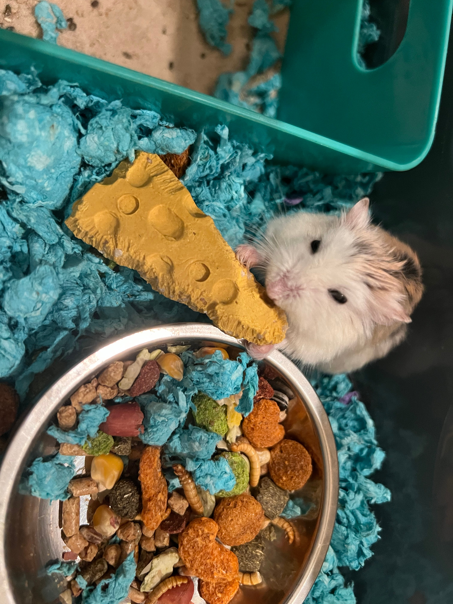

Hi person! As you may or may not know already, my name is Flora Zhang. I graduated from UCSB with a degree in biology, and I am now pursuing my second bachelor's in computer science!
I interned at NASA Jet Propulsion Laboratory during spring 2023. I was able to work on a lot of cool stuff, but primarily I contributed to this paper! Although it's still in preprint as of Nov 2023, I am super proud of everyone who was a part of it!
Then in summer 2023, I interned as a software engineering intern at Avanade! It was so amazing to live in Seattle for the summer. I plan on moving back once I finish this program and finish my time here in LA.
I love playing Pokemon Go and rodents. Those are probably the most prominent things about me. I had a pet hamster named Gibbs, sadly he passed in December 2022.
Here's Gibbs! Yes, he is named after Gibbs Free Energy.
And yes, the background picture for this page is a sunset again. Because as a former student at UCSB, it would be a tragedy if you did not take endless pictures of the sunset.